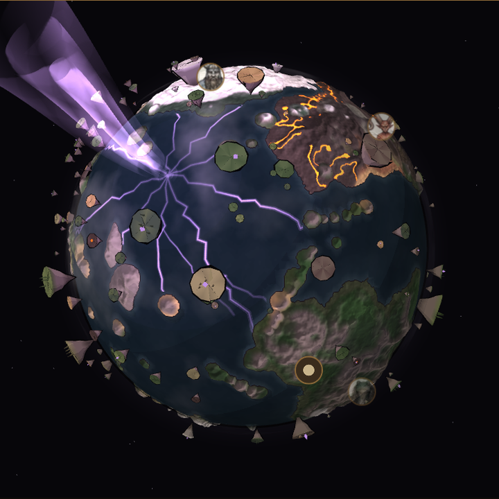

A recognisable planet, badly broken
The world
Continents and oceans you could still name, split by fractures, with floating islands drifting above them and a vortex that never stops turning.

Loading the globe…
Homelands
Where each people lives on the globe is still being decided. The markers are provisional.
Translators' note on the map
The continent and sea names shown are working names from a first concept map, not names the scholar uses. The final arrangement of continents, oceans and fractures is still being drawn.
Islands near the vortex move faster here, as the lore suggests. Their real number is unknown; most are unexplored.